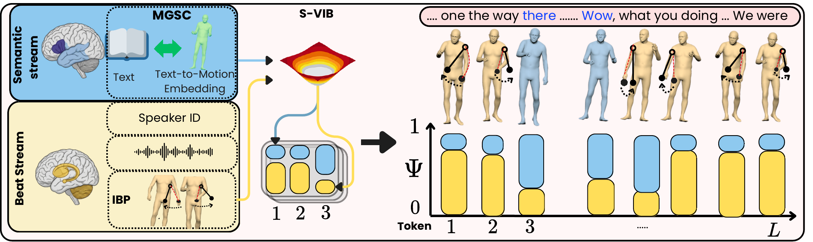
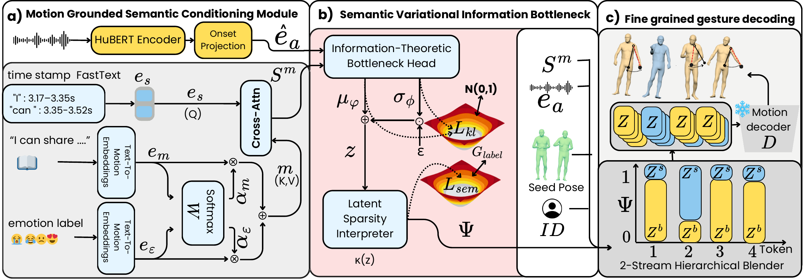
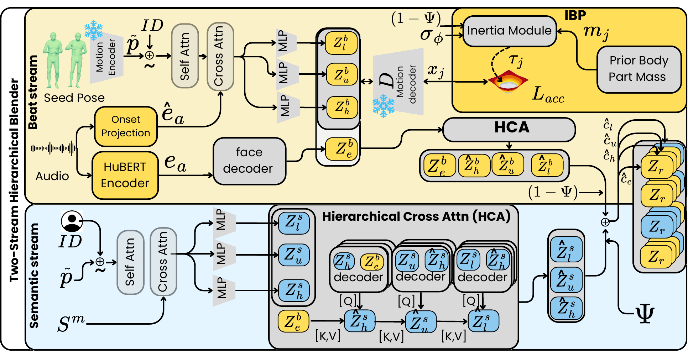
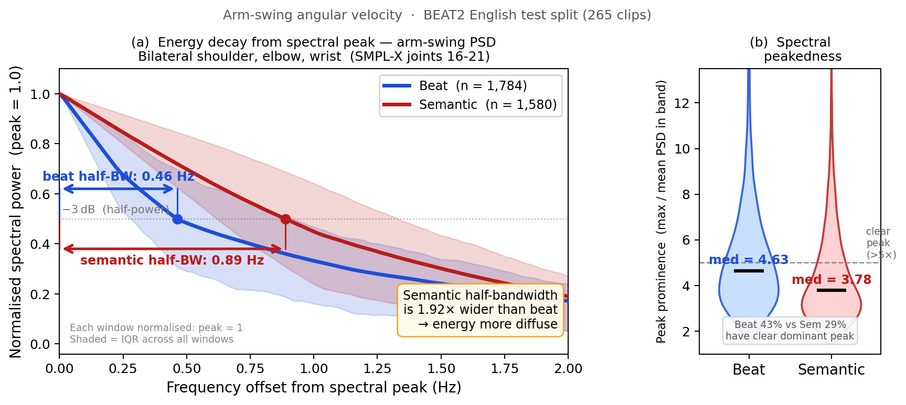
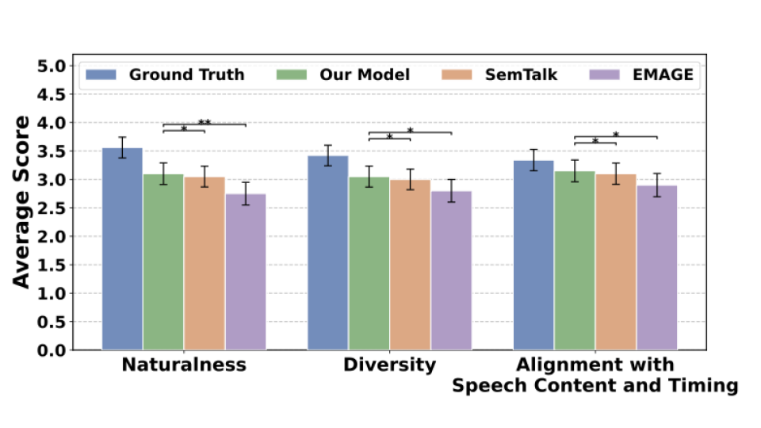
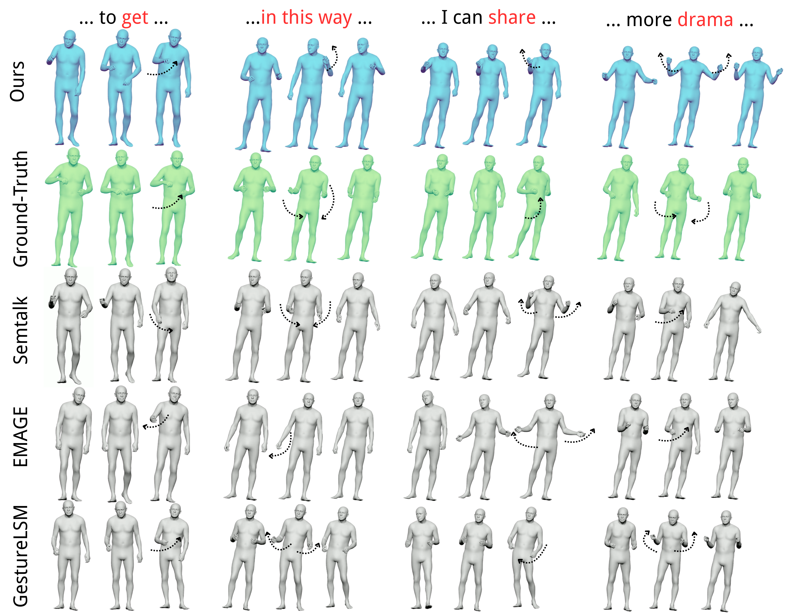

Method Overview
DuoGesture models co-speech gesture generation as the interaction of two coupled processes: a semantic stream for sparse lexical gestures and a beat stream for rhythmic prosody-aligned motion.
Highlights
DuoGesture addresses the tension between semantic expressivity and biomechanical plausibility in holistic co-speech gesture generation.
Dual-Stream Gesture Generation
Co-speech motion is decomposed into a semantic stream and a beat stream, reflecting the distinction between sparse lexical gestures and frequent rhythm-aligned beat gestures.
Motion-Grounded Semantic Conditioning
MGSC replaces purely linguistic embeddings with text-to-motion representations, providing motion-aligned semantic priors for long-tailed gesture triggers.
Semantic Variational Information Bottleneck
S-VIB introduces a stochastic frame-level gate that learns when semantic motion should override beat motion without collapsing into a single all-semantic or all-beat path.
Inertial Beat Prior
IBP applies an anthropometric arm-chain prior to reduce jitter and improve rhythmic consistency without constraining expressive semantic frames.
Abstract
Co-speech gesture generation requires both semantic expressivity and biomechanically plausible rhythmic motion. Existing holistic gesture models mix lexically grounded semantic gestures with frequent prosody-aligned beat gestures. This limits semantic grounding, speech-motion alignment, and kinematic smoothness. We propose DuoGesture, a neuro-inspired and biomechanically informed approach that decomposes co-speech gesture synthesis into semantic and beat streams. The two streams are coordinated by a Semantic Variational Information Bottleneck, a stochastic frame-level gate that learns when semantic gestures should override rhythmic beat motion. The semantic stream is controlled by Motion-Grounded Semantic Conditioning, which replaces purely linguistic word embeddings with motion-language representations to provide motion-aligned semantic priors for long-tailed lexical triggers of gestures. The beat stream is further regularised by an Inertial Beat Prior, an anthropometry-weighted arm-chain module that reduces jitter and improves rhythmic consistency without constraining semantic frames. Objective evaluations and subjective experiments show that DuoGesture outperforms strong baselines, while component ablations confirm the complementary roles of semantic grounding, stochastic stream selection, and biomechanical regularisation.
Framework Overview
DuoGesture is a two-stage latent generator. Stage 1 uses a regional RVQ-VAE tokenizer. Stage 2 predicts latent gesture codes through a convex combination of semantic and beat branches controlled by a stochastic frame-level gate.



Motion-Grounded Semantic Conditioning
Word-level FastText features keep the timing of each spoken word, but they query motion-style and emotion embeddings from a pretrained text-to-motion model (TMR) instead of a purely linguistic or image-text encoder. The resulting semantic features are aligned with how people move, not only with what was said.
Stochastic Semantic Gate
A variational bottleneck combines what to gesture (the MGSC feature) with when to gesture (a low-capacity HuBERT timing projection) and predicts a per-frame semantic weight, supervised by BEAT2 semantic annotations.
Biomechanical Beat Prior
A training-time loss penalises deviation from constant-velocity motion on the beat stream’s arm chain, weighted per joint by De Leva body-segment masses. It is switched off on semantic frames and adds no cost at inference.
Why Two Streams? ‐ Motivation for the IBP
Beat and semantic arm-swings have fundamentally different spectral signatures ‐ and that difference is what makes the Inertial Beat Prior both possible and necessary.

Rhythmic & periodic ‐ like a metronome
Beat arm-swings repeat at a steady pace in sync with speech prosody. Their energy spikes at one tight frequency (half-bandwidth only 0.46 Hz), just like a pendulum. 43% of beat windows show a single unmistakable dominant peak.
Expressive & varied ‐ like a dance move
Semantic gestures vary freely in speed and timing to express meaning. Their energy spreads nearly twice as wide (0.89 Hz) and only 29% have a clear spectral peak ‐ they don’t follow a single rhythm.
Regularise only where motion is rhythmic
Because beat arm-swings are naturally periodic, IBP adds a lightweight, mass-weighted arm-chain loss to the beat stream alone. It reduces jitter without penalising the free-form expressive frames of the semantic stream.
Quantitative Results
On BEAT2, DuoGesture achieves the lowest Fréchet Gesture Distance (FGD) in both the one-speaker and all-speaker settings. It also leads on the two metrics that test our contributions directly: semantic-relevant gesture recall (SRGR) for MGSC, and smoothness relative to ground truth (ΔLDLJ) for IBP. On the secondary diagnostics (beat alignment, diversity, facial MSE and LVD) it remains competitive.
| Setting | Model | FGD ×10−1 ↓ | BA ×10−1 ↑ | Diversity ↑ | MSE ×10−3 ↓ | LVD ×10−5 ↓ | SRGR ↑ | ΔLDLJ → 0 |
|---|---|---|---|---|---|---|---|---|
| One speaker | TalkSHOW (CVPR 2023) | 6.209 | 6.947 | 13.47 | 7.791 | 7.771 | 0.248 | 1.6520 |
| AMUSE* (CVPR 2024) | 12.11 | 8.318 | 14.93 | – | – | – | – | |
| ProbTalk* (CVPR 2024) | 5.040 | 7.711 | 13.27 | 8.617 | – | – | – | |
| EMAGE (CVPR 2024) | 5.512 | 7.724 | 13.06 | 7.680 | 7.556 | 0.314 | 0.0470 | |
| MambaTalk* (NeurIPS 2024) | 5.366 | 7.812 | 13.95 | 6.289 | 6.897 | – | – | |
| RAG-Gesture* (CVPR 2025) | 8.080 | 7.340 | 11.97 | – | – | – | – | |
| GestureLSM (ICCV 2025) | 4.247 | 7.290 | 13.76 | 7.139 | 7.469 | 0.320 | 1.5138 | |
| SemTalk (ICCV 2025) | 4.278 | 7.770 | 12.91 | 7.153 | 6.938 | 0.315 | −0.5910 | |
| PyraMotion* (NeurIPS 2025) | 4.612 | 7.420 | 13.42 | 7.176 | 7.270 | – | – | |
| DuoGesture (ours) | 4.101 | 7.557 | 12.34 | 7.103 | 7.646 | 0.343 | −0.0304 | |
| All speakers | TalkSHOW (CVPR 2023) | 6.145 | 6.863 | 13.12 | 7.953 | 7.824 | 0.257 | 1.7360 |
| EMAGE (CVPR 2024) | 5.643 | 7.707 | 12.92 | 7.694 | 7.593 | 0.326 | 0.0530 | |
| GestureLSM (ICCV 2025) | 4.268 | 5.250 | 11.20 | 7.582 | 7.685 | 0.305 | 1.5386 | |
| SemTalk (ICCV 2025) | 5.214 | 7.689 | 12.74 | 7.612 | 7.498 | 0.302 | −0.6020 | |
| DuoGesture (ours) | 4.081 | 7.699 | 12.83 | 7.502 | 7.658 | 0.348 | −0.0390 |
Ablation Studies
All ablations use the all-speaker setting. Removing MGSC costs the most (FGD 4.081 → 4.803), more than removing S-VIB or IBP. Replacing the text-to-motion encoder (TMR) with CLIP lowers semantic recall, and the anthropometric De Leva weighting is what brings motion smoothness close to ground truth: uniform smoothing over-smooths, while no prior leaves excess jitter.
| Variant | MGSC | S-VIB | IBP | FGD ↓ | BA ↑ | Diversity ↑ |
|---|---|---|---|---|---|---|
| (a) w/o MGSC (S-VIB + IBP only) | – | ✓ | ✓ | 4.803 | 7.531 | 12.61 |
| (b) MGSC only (linear σ-gate) | ✓ | – | – | 4.306 | 7.551 | 12.52 |
| (c) MGSC + S-VIB (no IBP) | ✓ | ✓ | – | 4.178 | 7.446 | 12.77 |
| (d) MGSC + IBP (linear σ-gate) | ✓ | – | ✓ | 4.137 | 7.557 | 12.65 |
| (e) Full DuoGesture | ✓ | ✓ | ✓ | 4.081 | 7.699 | 12.83 |
| MGSC condition | FGD ↓ | SRGR ↑ |
|---|---|---|
| Full MGSC (TMR + emotion) | 4.081 | 0.348 |
| Without emotion | 4.110 | 0.335 |
| CLIP instead of TMR | 4.436 | 0.318 |
| CLIP, without emotion | 4.332 | 0.305 |
| IBP variant | FGD ↓ | BA ↑ | Diversity ↑ | ΔLDLJ → 0 |
|---|---|---|---|---|
| No IBP | 4.178 | 7.446 | 12.77 | −0.4904 |
| Uniform IBP | 4.278 | 7.450 | 12.80 | +1.2790 |
| De Leva IBP | 4.081 | 7.699 | 12.83 | −0.0390 |
User Study
We ran a perceptual study with 35-second clips from the BEAT2 test set across six narrated topics, comparing Ground Truth, DuoGesture, SemTalk and EMAGE. Thirty native English-speaking participants from the UK (balanced by self-reported gender) rated 24 videos on a five-point Likert scale for naturalness, motion diversity, and alignment with speech content and timing. The order of methods and clips was randomised for each participant.

Qualitative Results
For semantic phrases such as “to get,” “I can share,” and “more drama,” DuoGesture produces clearer arm trajectories with a more visible, phrase-dependent structure. For the beat-dominant phrase “in this way,” the motion stays temporally coherent with the speech rhythm without excessive smoothing.

Demo Videos
Featured videos from the user study, with one explicit comparison against Ground Truth.